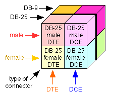
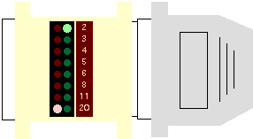

|
|
www.conserver.com |
|
|
www.conserver.com |
This document is meant to provide 'the basics' of connecting asynchronous serial devices together. It starts with my two favorite secrets, and then tries to take the mystery out of the 'magic' of the physical layer async serial connection. There are also definitions of terms, for the newer folks, as well as troubleshooting and testing techniques.
There is one other source to check for ideas, suggestions, and maybe some console-related news tidbits; the ConsoleTeam blog.
If you find any errors, or if you have some additional information that I can include, please email me at consoles at conserver.com.
|
How Simple Is It? Basic Troubleshooting Hacking Speed and Parity Cable Length issues Pre-wired adapters & cables |
Passive Signal Tracers page RS-232 info and tips Serial port hardware info RJ-45 Signals Pinouts Page What's in my Doctor Bag Modem Tips Tutorials, Presentations, Articles |
Sometimes, folks look at serial communications and think it's a Black Magic, with so many different connectors and all of those different wires...there is just too much to know!
While I'll admit that modems, and even some serial hookups, can be more like a Black Art, it's certainly not magic. But, after many years of hacking with RS-232 serial devices, I'm here to tell you that the basics are pretty simple. With just a bit of knowledge, you can look like a serial magician, and amaze your friends and co-workers. Here's my first secret:
|
Pre-built RJ-45 serial adapters make serial hookups easy, consistently Let's consider the task of connecting a serial device to a console server or patch panel. To make our lives easier, we will use pre-wired adapters that match the RJ-45 signaling pinouts for our terminal server. (You can find more information about these on any of my Console Connection Guides.) If you think that there are dozens of connectors and adapters to choose from, the number of possible combinations is huge, right? But, consider these factoids;
When you consider that more than half of serial ports that you will need to deal with use the DB-25 adapter, then you really only have four possibilities for that one connector format, and four is not too many to deal with, is it? "But" I hear you say, "there are lots of connector types, so there's still many more possible combinations." |
|
Well, when you also consider that the majority of async serial devices (80+ percent, based on common hardware in use during the last 10 years inclusive) use either the DB-9 or the DB-25 connector for serial connections, you simply add another 2x2 matrix. That is, when you have to work with both DB-25 and DB-9 connections together, you now have eight choices that cover most cases, and that's still not too many possibilities, is it? For each type of connector you have to work with, you add four more adapter possibilities. (Male/female, DTE/DCE.) For DB-25 and DB-9, you'll need to stock 8 different adapters wired for your brand of terminal server. When you are connecting two devices together, you won't have more than eight possible combinations! (In fact, you'll usually have fewer than that! Keep reading!) |
|
Now, consider that when you are trying to connect a device to your console server, you already know which connector type the device is using, and you already know which gender the connector is, right? When you already know two of the three sides of our cube, you are left with just two possible choices, either DTE or DCE. How simple is that? Now, you could just take one of each adapter with you, and try them one at a time, and test the connection through some application(s) to see if the connection is working. But that still leaves some question if the connection doesn't work. So, here's my second secret: |
|
Passive RS-232 Signal Tracers are your friend! Passive Signal Tracers do not require batteries, and simply show you the 'logic state' (positive or negative voltage, or no voltage at all) on each of the important signal leads. The animation below illustrates how to use a passive signal tracer to make sure you are using the correct (DCE/DTE) adapter for your application. (The number in the corner of the animation indicates the step number from the instructions below.) For this example, I will presume two thing;
First thing: Determine what gender and type of connector you need on your adapters. When you pick up the two adapters you need to choose between (one DCE and one DTE), you should also pick up the appropriate passive Signal Tracer (DB-9 or DB-25) as well!
|
|
Step 2: Pick one of the two adapters, and attach it to the cable to your patch panel...it doesn't matter which one. Next, take the Signal Tracer off the device, and move it to adapter you have attached to the cable, and see which pin the device is putting a signal on (pin 2, or pin 3). If the pin with the signal (2 or 3) is different from the pin with the signal (2 or 3) from the device, you are ready to plug the adapter onto the device (step 3). Step 2a: If the pin with the signal on your RJ-45 adapter is the same number as the pin with the signal on your device, then you need to use the other RJ-45 adapter. Swap the adapter, and check your signals again. If you have different signals (pin 2 on one side, and pin 3 on the other), you're ready for Step 3 (Connection). Step 3: That's it. You've just connected your serial device. You may still need to fuss with the communications settings (speed, maybe parity), but you will know that the physical connection is now ready! |

James Newton points out another benefit of the Passive Signal Tracer, because it can show you when a signal is truly an RS-232 signal (with positive and negative signalling in reference to the signal ground), or a DC-biased signal, such as a TTL interface. (For TTL info, you can check the TTL to RS232 info page on James' i MassMind website.
|
Make sure you connect the physical layer first If you are only connecting two devices that are close together, you may not think about this. You should get in the habit of making sure the physical connection is in place before you start trying to test the software settings. Most devices will talk to each other with async settings of 9600 bps, 8 data bits, No parity, and 1 stop bit...often referred to as 9600 8-N-1. But sometimes you will find that one of the devices is at a different speed. Less often, you may find that one device is using a different number of data bit, or a different parity than normal. Rarely, you will find that the settings for Flow Control or Handshaking are not compatible, and will need to be changed. But what this really means to you is; when you connect two devices together, and they don't "just work", you usually start to fuss with these different settings. You can spend a lot of time, going through all sorts of changes (and this takes time) before you decide to check if the wires are connected properly. The lessons here are;
|
|
Connecting two devices together We've already seen how connecting one device to a patch panel boils down to two choices of adapters. So, how many choices do you have when you are connecting two devices? No, not four...just two! Here's why:
The simple explanation is this: for device number one, you already know connector type and gender...just pick one of the two possible adapters, and connect that to the device, knowing that this will work out just fine. (No matter which of the two adapters you have chosen, you will be able to communicate with the other device!) Now, for device number two, take both of the possible adapters, trusting that one of the two will give you the correct signals. You only need to worry about testing your two choices on one end of the cable. Take your trusty signal tracer with you, and all will be well. If you don't have a signal tracer, buy one. If you local computer stores don't have one, you can buy them from APA Cables & Networks.) If this *still* doesn't make sense to you, all I can ask is that you either;
Once you have your physical connection in place, you are ready to start testing the connections, confident that the your connections are correct. |
|
Testing Cable Connections By connecting the signal monitor to one end of a male cable, or adapter, you can check to see if the signals are complimentary to the other port or not. In the illustration at the right, we find another DTE device. (Pin 2 is lit.) Connecting this connector to the Sun TTY port would connect inputs to inputs, so the devices would not be able to communicate with each other. |
 |
|
Complimentary Signals In this illustration at the right, we find DCE signals on the cable (pin 3 is lit). Connecting this connector to the Sun TTY port would connect inputs of one device to the outputs of the other device (hence the term "complimentary signals"). These devices would now be able to communicate with each other. With appropriate (matching) genders, and complimentary signals, you can connect the devices, and start checking the port speed and communications setting (data bits, parity, stop bits). |
|
|
Connecting Devices with RJ-45 Ports Some devices have RJ-45 connectors for their serial ports. In larger environments, you may also use a console server. In order to provide higher port density, and to make connecting easier, many of these console servers use RJ-45 connectors. (All 8 wires will be used!) My basic test fixture for checking the signals of devices in an RJ-45 environment is to connect a signal monitor to a DB-25 to RJ-45 adapter that is wired to work with the console devices in use. In a Cisco server environment, I'll use a CFDTE (Female DTE, Cisco part 29-0810-01 ) adapter, and then I use an ethernet cable to connect to the RJ-45 connectors that I want to check. The signals are then displayed on the signal tracer. The test cable, and the adapter schematic, are shown at the right. You can test the signals at your patch panel or console server, or console ports on devices, to determine which signals are outputs, and then you can find the appropriate adapter to use on the other devices that you wish to attach to these ports. |
|
Many RJ-45/DB-25 and RJ-45/DB-9 adapters are designed to help connect RS-232 devices to a proprietary RJ-45 wiring scheme. There are many wiring schemes to choose from. (Since you cannot tell from the case of most adapters what wiring schema was used inside, if you build your own adapters, you should always label your adapters well, so you can tell them apart.) I prefer buying pre-built adapters, and I like my adapters to be fully wired for hardware handshaking and hardware (RTS/CTS) flow control. I find that the consistency means I don't have to wonder if an adapter wiring problem is to blame if a connection won't work.
If you use pre-built RJ-45 adapters to connect your devices to your terminal servers, and a signal tracer to confirm that the signals are matched properly, then when you pick the right adapters (DTE and DCE, with the correct connector type and gender), you can be fairly certain that when you get 2 & 3 matched (inputs to outputs), you will also have all of the other pins straightened out as well.
 |
TIMESAVING TIP: Swapping adapters and cables, and then testing the connection with software after each swap is inefficient, since a mismatched software setting could make the right adapter combinations look wrong. If you use a signal tracer to get the connection correct, you will have more confidence to check the software settings if the connection doesn't work immediately. This is especially true if you need to take more than ten steps between connecting the adapters, and testing the connection! |
When both lights (2 & 3) are lit when the signal monitor is connected between the devices, you are ready to try the connection, or start working with the software settings. Until you get pins 2 & 3 connected properly, don't waste your time with software settings! If you only have pin 2, or pin 3 lit when you join both devices with a signal monitor in the middle, chances are pretty slim that you will see anything on the display when you try to type.
|
The best way to determine the serial port speed to a device (read: fastest way to find the correct answer the first time) is to read the manual for the device. If the settings are fixed, the manual will often tell you. If the settings are programmable by hardware (switches or jumpers), the manual will show you where to look and how to tell what settings are being used. If the setting is programmable in software, the manual can usually tell you what command to send to the device to see the current settings. |
If you can't find the manual, you'll be glad to read that most console ports, and terminal server ports, will use 9600 bps as a default setting. If you make a point of using the default settings, most things that you connect to the terminal server will work without extra fuss.
|
If you are using a terminal emulation program to test your connection, try sending a carriage return (press the [enter] key) a couple of times. This will 'wake-up' most devices, and the device will send some characters back to you, like a log in prompt. If that doesn't work, try pressing the [space] key, or the [*] (asterisk) key a few times.
|
If you are getting unreadable characters back in response to your typing, you probably have a speed, or a parity mismatch. Try changing the speed on your terminal package, and try testing again. Keep testing different speeds until you find one that works. (If you have tried them all, and none seemed to work, you may have a parity mismatch.
|
Most modems will auto-configure their serial port speed to match whatever device is connected to their data ports. (The secret here is to have the attached device send some characters to the modem before the modem accepts a call.) While this 'feature' makes most modems "Plug and Play", it will also restrict a modem to use very slow connection speeds.
|
|
Hacking parity, data bits, stop bits Most devices use 8-N-1 (8 data bits, No Parity, and 1 Stop bit) as their default setting. Normally, you don't want to change these settings on the devices that you are connecting. The second most common setting is 7-E-1 (7 data bits, Even Parity, and 1 Stop bit), and is popular with devices dealing with on-line communications services, or using X-25 packet switching for communications. |
If you have tried all of the serial speeds, and still only see 'garbage' characters, set the speed back to 9600, and try a different parity setting...and then try the different speeds again if 9600 didn't work. (Of course, you could try reading the manual for the device you are attaching, or check the settings on that device, and then set your terminal server port settings to match. ;-)
Cable Lengths
The RS-232 specification called for no more than 50 feet. However, I've had success with much greater distances in the past, depending on the devices being connected (driver voltages), cable length, cable type, shielded or not, etc.
The DigiCorp folks have posted a note on their support pages that recommends that the cable length be no more than 2500 picofarad in capacitance, where each connector has a 'cost' of 100 pf, and then you need to find out how many picofarads-per-foot your cabling is rated. More info is available on their Tech Support Specifications Page. Your mileage may vary. Older Macintosh computers had lower voltages (~6-9v) than the RS-232 specification (~25v), and as a result, their range seems shorter to me.
Twisted Pair cable can help extend the range (and often has a lower capacitance...hmmm...), but the twists don't often help reduce line noise, because the various vendors use different RJ-45 wiring schemes. As a result, You often have your most susceptible leads (data) twisted together, versus twisted with a fairly static signal (like ground, or handshaking leads).
Shielded cable can help reduce noise, but the cost is higher than for normal CAT-5. You can usually achieve good noise isolation if you pay attention to WHERE your cables are placed. Avoid laying data cables parallel with AC power cables, or laying on/near transformers or fluorescent lighting ballasts (both are strong sources of electromagnetic radiation).
Some of the Console Server equipment manufacturers also sell some adapters or cables, but you cannot get the full matrix from any of the manufacturers. My preference is to stock a complete set of adapters for the hardware that I need to support, and to buy them pre-built instead of building them myself. I try to keep enough stock on hand to ensure that I can support any surprise machine deliveries. Part of the clean-up steps after a maintenance window should be to make sure you have enough adapters on-hand...if you used a bunch during the downtime, it's probably time to order more. I keep a minimum of 5 of everything, with 10-15 of each adapter that we use the most often. (Check my where to buy page for more information.)
Between the cost of the adapter components, and my time to build and label them, I save money buying pre-built adapters in bulk. (And at my billing rates, you probably don't want me building adapters for you! ;-)
Americable made a conscious effort to build up a series of console adapter kits, and to find the DataTran signal tracers. You can buy specific adapters (and custom RJ-45 to RJ-45 cables) in any quantities, as well as the kits themselves. In the summer of 2003, Americable merged with another company to become APA Cables & Networks, and APACN continued to make these parts and kits, though you would need to purchase in large quantites. (This is still a great option if you are running a large site, or buying for many sites or offices.) In the end of 2007, APACN became Clearfield Communications and it's not clear if they will continue to provide the serial console parts. When I determine for sure, I'll update this page.
Kits, adapters, and cables are available for: Cisco and Lantronix, IOLAN Rack+, Xyplex 1600 and iTouch In-Reach, and Xylogics Annex - Bay Networks - Nortel
By default, the adapters for each of the different RJ-45 wiring schemes are shipped with different case colors, so that they will be easier to identify in larger installations which support multiple vendors devices. But, you can specify a case color when you order, if you desire.
APACN also adopted a labeling scheme that includes a reference to the wiring scheme, as well as gender and DCE/DTE wiring, so that colorblind individuals can tell which RJ-45 wiring scheme is used on any given cable or adapter. (You can get more information, or order parts, by contacting 1-800-422-2537. Steve Vacik has been helpful in the past, but any of the sales folks should be able to help if you give them the part number(s) from the adapter kit pages listed above.)
|
NOTICE: Most of the pages, articles, and tutorials on this website are copyrighted works. You may make 'deep links' to various pages. (If you let me know which page(s) you are linking to, I'll let you know if I move the page(s) during updates.) Please send me email if you wish to republish any material, or use it on your own website. |